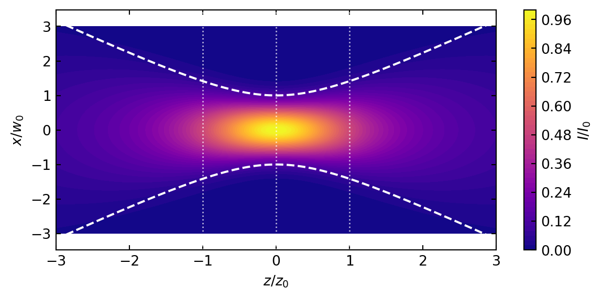
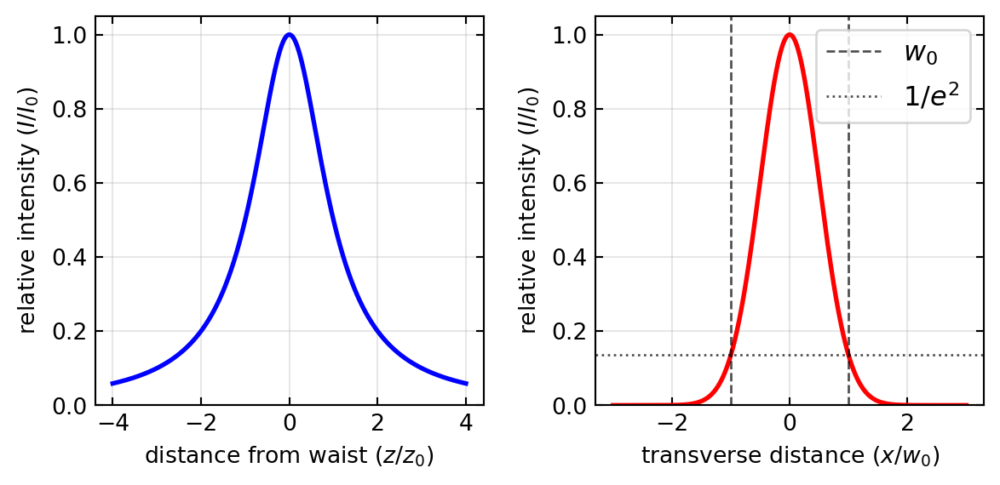
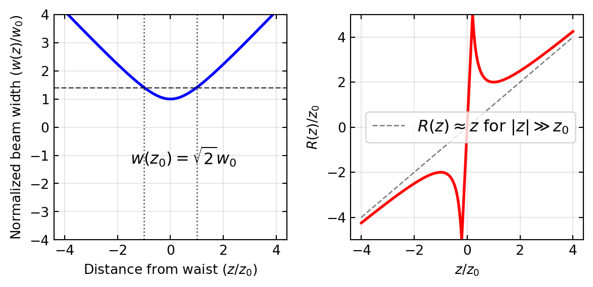
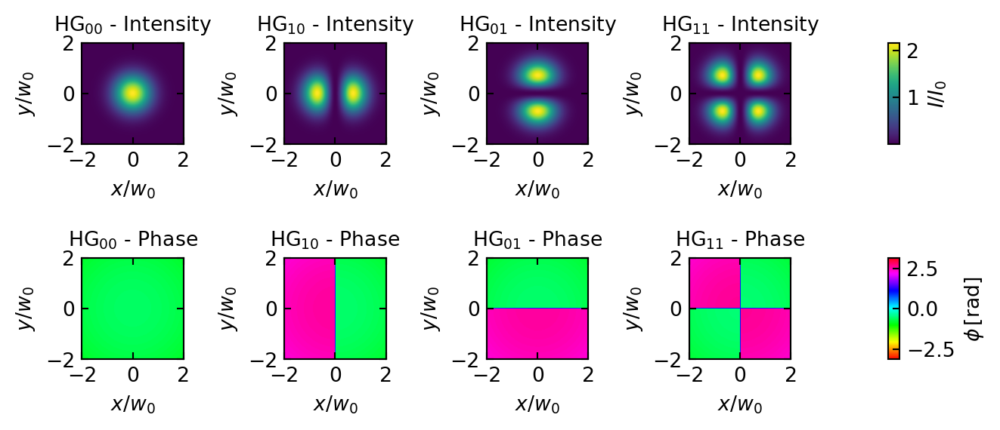
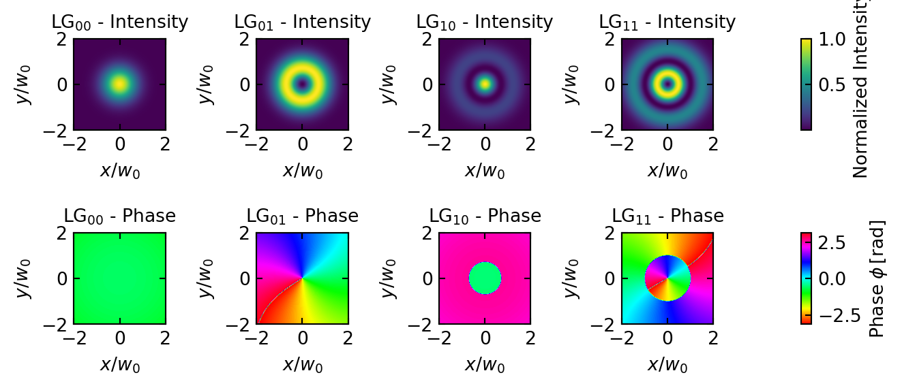

Introduction to Gaussian Beams
In optics and laser physics, Gaussian beams represent one of the most fundamental and important mathematical descriptions of laser light propagation. They are particularly relevant for understanding laser resonators, optical systems, and coherent light behavior. This section introduces Gaussian beams from first principles and explores their mathematical description.
Derivation from the Helmholtz Equation
We begin with the Helmholtz equation, which describes monochromatic electromagnetic waves in a homogeneous medium:
\[\nabla^2 U + k^2 U = 0\]
where \(U\) represents the electric field component, \(k = 2\pi/\lambda\) is the wave number, and \(\lambda\) is the wavelength of light. For a wave predominantly traveling along the \(z\)-axis, we can express the electric field as:
\[U(x,y,z) = u(x,y,z)e^{-ikz}\]
Here, \(u(x,y,z)\) is a complex amplitude function that varies slowly with \(z\) compared to the wavelength. Substituting this into the Helmholtz equation and expanding the Laplacian operator yields:
\[\left(\frac{\partial^2}{\partial x^2} + \frac{\partial^2}{\partial y^2} + \frac{\partial^2}{\partial z^2}\right)(u e^{-ikz}) + k^2 (u e^{-ikz}) = 0\]
Computing the derivatives and simplifying:
\[\frac{\partial^2 u}{\partial x^2} + \frac{\partial^2 u}{\partial y^2} + \frac{\partial^2 u}{\partial z^2} - 2ik\frac{\partial u}{\partial z} = 0\]
The Paraxial Approximation
The paraxial approximation applies when the beam’s angular spread is small, meaning the wavefronts are nearly perpendicular to the propagation axis. Mathematically, this means that the amplitude \(u\) varies slowly along the propagation direction compared to transverse directions:
\[\left|\frac{\partial^2 u}{\partial z^2}\right| \ll \left|2k\frac{\partial u}{\partial z}\right|\]
Under this approximation, the Helmholtz equation simplifies to the paraxial Helmholtz equation:
\[\frac{\partial^2 u}{\partial x^2} + \frac{\partial^2 u}{\partial y^2} - 2ik\frac{\partial u}{\partial z} = 0\]
To solve this equation, we propose the ansatz:
\[u(x,y,z) = A(z)\exp\left[-\frac{k}{2q(z)}(x^2 + y^2)\right]\]
where \(A(z)\) and \(q(z)\) are complex functions to be determined. Substituting this into the paraxial equation and solving the resulting differential equations:
\[\frac{dq}{dz} = 1 \quad \text{and} \quad \frac{dA}{dz} = -\frac{A}{q}\]
These yield solutions \(q(z) = q_0 + z\) and \(A(z) = \frac{A_0}{q(z)}\), where \(q_0\) and \(A_0\) are constants.
The complex beam parameter \(q(z)\) relates to physical parameters through:
\[\frac{1}{q(z)} = \frac{1}{R(z)} - i\frac{\lambda}{\pi w^2(z)}\]
where \(R(z)\) is the radius of curvature of the wavefront and \(w(z)\) is the beam radius at which the intensity falls to \(1/e^2\) of its axial value.
Setting \(q_0 = iz_0\) where \(z_0\) is the Rayleigh range, we can express these parameters as:
\[w(z) = w_0\sqrt{1 + \left(\frac{z}{z_0}\right)^2}\]
\[R(z) = z\left[1 + \left(\frac{z_0}{z}\right)^2\right]\]
where \(w_0 = \sqrt{\frac{\lambda z_0}{\pi}}\) is the beam waist (minimum beam radius).
The complete Gaussian beam solution is:
\[U(x,y,z) = U_0 \frac{w_0}{w(z)} \exp\left[-\frac{x^2 + y^2}{w^2(z)}\right] \exp\left[-ikz - ik\frac{x^2 + y^2}{2R(z)} + i\phi(z)\right]\]
where \(\phi(z) = \arctan(z/z_0)\) is the Gouy phase shift, representing an additional phase beyond that of a plane wave.
In scalar wave theory, the intensity of the Gaussian beam is proportional to the square of the amplitude. It can be calculated as:
\[I(x,y,z) = |U(x,y,z)|^2 = I_0\frac{w_0^2}{w^2(z)}\exp\left[-\frac{2(x^2+y^2)}{w^2(z)}\right]\]
where \(I_0 = |U_0|^2\) is the peak intensity at the beam waist. This expression shows that the intensity has a Gaussian profile in any transverse plane, with its peak on the beam axis. The intensity falls to \(1/e^2\) of its axial value at a radial distance \(r = w(z)\) from the axis, which defines the beam radius. The total power carried by the beam is conserved during propagation, but the peak intensity decreases as \(w(z)\) increases with distance from the waist.
Gaussian Beam Propagation in the x-z Plane
We can visualize how a Gaussian beam’s intensity varies across both the propagation direction (z-axis) and transverse direction (x-axis) simultaneously using a 2D contour plot.
This contour plot illustrates how the Gaussian beam intensity distribution evolves as it propagates. The horizontal axis represents the normalized propagation distance (z/z₀), while the vertical axis shows the normalized transverse distance (x/w₀). The color gradient indicates intensity values, with brighter colors representing higher intensities.
The white dashed lines trace the beam width w(z), where the intensity falls to 1/e² (approximately 13.5%) of its value on the beam axis. Note how the beam width reaches its minimum at the beam waist (z=0) and expands as the beam propagates away from the focus.
The plot clearly shows that the highest intensity occurs at the beam waist, with the intensity decreasing both as we move away from the center axis and as the beam propagates away from the focal point.
Key Gaussian Beam Parameters
The following table summarizes the important parameters that characterize a Gaussian beam:
| Parameter | Expression | Description |
|---|---|---|
| Beam waist (\(w_0\)) | Minimum beam radius at focus (\(z=0\)) | |
| Beam width (\(w(z)\)) | \(w(z) = w_0\sqrt{1 + \left(\frac{z}{z_0}\right)^2}\) | Beam radius at position \(z\) |
| Rayleigh length (\(z_0\)) | \(z_0 = \frac{\pi w_0^2}{\lambda}\) | Distance over which beam area doubles |
| Radius of curvature (\(R(z)\)) | \(R(z) = z\left[1 + \left(\frac{z_0}{z}\right)^2\right]\) | Radius of wavefront curvature |
| Divergence angle (\(\theta\)) | \(\theta = \frac{\lambda}{\pi w_0}\) | Far-field half-angle of beam spread |
| Gouy phase (\(\phi(z)\)) | \(\phi(z) = \arctan\left(\frac{z}{z_0}\right)\) | Additional phase beyond plane wave |
| Complex beam parameter (\(q(z)\)) | \(q(z) = z + iz_0\) | Combined parameter for beam properties |
These parameters are interrelated, forming a complete description of how a Gaussian beam propagates. The Rayleigh length \(z_0\) is particularly important as it defines the transition between the near field (where the beam is approximately collimated) and the far field (where the beam diverges linearly). At a distance of one Rayleigh length from the waist, the beam width increases by a factor of \(\sqrt{2}\) and the intensity drops to half its maximum value.
Gaussian Beam Intensity Profiles
To better understand the spatial distribution of intensity in a Gaussian beam, it’s helpful to visualize how the intensity varies along different directions. Here we explore two fundamental cross-sections: the axial intensity along the beam propagation path, and the transverse intensity profile at the beam waist.

Gaussian Beam Propagation
To better understand the spatial evolution of a Gaussian beam as it propagates, we can visualize how two key parameters change with distance: the beam width \(w(z)\) and the wavefront radius of curvature \(R(z)\).

The left plot shows how the beam width \(w(z)\) evolves with distance from the beam waist. At \(z = 0\), the beam is at its narrowest point \(w_0\). At the Rayleigh range (\(z = ±z_0\)), the width increases to \(\sqrt{2}w_0\). For \(|z| \gg z_0\), the beam width increases approximately linearly with distance, corresponding to a constant far-field divergence angle \(\theta = \lambda/(\pi w_0)\).
The right plot illustrates the wavefront radius of curvature \(R(z)\). At the beam waist, the wavefronts are flat (\(R = \infty\)). The curvature reaches its minimum absolute value of \(2z_0\) at \(z = ±z_0\). For \(z > 0\), \(R(z)\) is positive (converging wavefronts), while for \(z < 0\), \(R(z)\) is negative (diverging wavefronts). As \(|z|\) increases, \(R(z)\) approaches the asymptotic behavior of a spherical wave, where \(R(z) \approx z\).
These parameters together provide a complete description of how the Gaussian beam transforms from a tightly focused wave near the waist to an approximately spherical wave in the far field.
Gaussian Beam Transformation Through Optical Systems
The ABCD Matrix Formalism
The propagation of Gaussian beams through optical systems can be elegantly described using the ABCD matrix formalism from ray optics. While ray optics typically tracks the position and angle of rays, for Gaussian beams we track the transformation of the complex beam parameter \(q(z)\).
When a Gaussian beam passes through an optical system characterized by an ABCD matrix, the complex beam parameter transforms according to:
\[q_2 = \frac{Aq_1 + B}{Cq_1 + D}\]
where \(q_1\) is the initial complex beam parameter and \(q_2\) is the transformed parameter. This remarkable result, known as the ABCD law for Gaussian beams, allows us to determine how the beam waist and wavefront curvature change through arbitrary optical systems.
Common Optical Elements
Different optical elements transform Gaussian beams in characteristic ways:
Free-space propagation over distance \(d\) is represented by:
\[\begin{pmatrix} A & B \\ C & D \end{pmatrix} = \begin{pmatrix} 1 & d \\ 0 & 1 \end{pmatrix}\]
This matrix describes how the beam naturally diverges as it propagates.
Thin lens with focal length \(f\):
\[\begin{pmatrix} A & B \\ C & D \end{pmatrix} = \begin{pmatrix} 1 & 0 \\ -1/f & 1 \end{pmatrix}\]
A lens modifies the wavefront curvature without changing the beam diameter at the lens location.
Curved interface between media with refractive indices \(n_1\) and \(n_2\) and radius of curvature \(R\):
\[\begin{pmatrix} A & B \\ C & D \end{pmatrix} = \begin{pmatrix} 1 & 0 \\ -\frac{n_2-n_1}{n_2 R} & \frac{n_1}{n_2} \end{pmatrix}\]
Multiple optical elements can be analyzed by multiplying their respective ABCD matrices in the order encountered by the beam.
Focusing of Gaussian Beams
A particularly important case is the focusing of a Gaussian beam by a lens. If a collimated Gaussian beam with waist \(w_0\) is incident on a lens with focal length \(f\), the focused beam will have a new waist:
\[w_0' = \frac{\lambda f}{\pi w_0}\]
located approximately at the focal point. This equation highlights the fundamental diffraction limit of focusing: smaller focal spots require larger input beam diameters relative to the wavelength.
When a Gaussian beam is focused by a lens, the Rayleigh range of the focused beam also changes. For a collimated input beam, the new Rayleigh range after focusing is:
\[z_0' = \frac{\pi {w_0'}^2}{\lambda} = \frac{\lambda f^2}{\pi w_0^2}\]
This means that tightly focused beams (small \(w_0'\)) have correspondingly shorter Rayleigh ranges, resulting in more rapid divergence beyond the focal point. This inverse relationship between spot size and Rayleigh range represents a fundamental trade-off in beam focusing: achieving a smaller spot size necessarily results in a beam that diverges more quickly after the focus.
The divergence angle of the focused beam is also affected, increasing as the spot size decreases:
\[\theta' = \frac{\lambda}{\pi w_0'} = \frac{w_0}{f}\]
This relationship shows that the focused beam’s divergence is inversely proportional to the input beam width. A wider input beam produces a more tightly focused spot with greater divergence, while a narrower input beam creates a larger focal spot with less divergence.
The transformation matrices enable us to design optical systems that reshape Gaussian beams to desired specifications—expanding, collimating, or focusing them for specific applications. This matrix approach bridges ray optics and wave optics, providing a powerful tool for optical system design with coherent light sources.
Higher-Order Gaussian Modes
Hermite-Gaussian Beams
Hermite-Gaussian modes form a complete set of solutions to the paraxial wave equation in Cartesian coordinates. They can be expressed as:
\[U_{nm}(x,y,z) = U_0\frac{w_0}{w(z)}H_n\left(\frac{\sqrt{2}x}{w(z)}\right)H_m\left(\frac{\sqrt{2}y}{w(z)}\right) \exp\left[-\frac{x^2 + y^2}{w^2(z)}\right]\] \[\times \exp\left[-ikz - ik\frac{x^2 + y^2}{2R(z)} + i(n+m+1)\phi(z)\right]\]
where \(H_n\) and \(H_m\) are Hermite polynomials of orders \(n\) and \(m\). The indices \(n,m = 0,1,2,...\) determine the number of nodes in the intensity pattern along \(x\) and \(y\) directions. The fundamental Gaussian beam corresponds to \(n=m=0\).
These modes naturally arise in laser resonators with rectangular symmetry and maintain their intensity pattern during propagation, though they scale in size. Each higher-order mode experiences an additional Gouy phase shift, causing different modes to accumulate phase at different rates during propagation.

Laguerre-Gaussian Beams
In systems with cylindrical symmetry, Laguerre-Gaussian modes provide a more natural description. In cylindrical coordinates \((r,\theta,z)\), they are given by:
\[U_{pl}(r,\theta,z) = U_0\frac{w_0}{w(z)}\left(\frac{\sqrt{2}r}{w(z)}\right)^{|l|}L_p^{|l|}\left(\frac{2r^2}{w^2(z)}\right) \exp\left[-\frac{r^2}{w^2(z)}\right]\] \[\times \exp\left[-ikz - ik\frac{r^2}{2R(z)} + i(2p+|l|+1)\phi(z) + il\theta\right]\]
where \(L_p^{|l|}\) are the associated Laguerre polynomials, \(p \geq 0\) is the radial index determining the number of radial nodes, and \(l\) is the azimuthal index that determines the helical structure of the wavefront.
A remarkable property of Laguerre-Gaussian modes with \(l \neq 0\) is that they carry orbital angular momentum (OAM) of \(l\hbar\) per photon. This OAM arises from the helical phase structure represented by the term \(\exp(il\theta)\), which creates a twisted wavefront resembling a spiral staircase. The intensity distribution forms a ring-like pattern with a dark center for \(l \neq 0\) due to the phase singularity along the beam axis. As \(p\) increases, additional concentric rings appear in the intensity pattern.

The orbital angular momentum of light is distinct from spin angular momentum (SAM), which is associated with circular polarization (±\(\hbar\) per photon). While SAM relates to the polarization state of light, OAM relates to the spatial structure of the wavefront. Importantly, these two forms of angular momentum can interact through spin-orbit coupling in certain optical systems, particularly in anisotropic or inhomogeneous media, at interfaces, or when light experiences strong focusing. Such spin-orbit coupling enables novel phenomena like spin-to-orbital angular momentum conversion, where the polarization state can influence the spatial structure of the beam and vice versa. This coupling mechanism has found specific applications in:
Optical tweezers - Spin-orbit coupling allows precise control of trapped particles by converting polarization changes into rotational motion, enabling manipulation of microscopic objects with unprecedented precision.
Quantum cryptography - The coupling between SAM and OAM creates additional degrees of freedom for encoding quantum information, enhancing the security and information capacity of quantum key distribution protocols.
Optical vortex metrology - Using the phase singularities created by spin-orbit interactions to detect nanoscale surface imperfections with superior sensitivity compared to conventional techniques.
Chiral spectroscopy - The interaction between polarization and spatial modes enables enhanced detection of chiral molecules by amplifying the difference in light-matter interactions between enantiomers.
Structured light microscopy - Coupling between SAM and OAM generates complex field patterns that improve resolution beyond the diffraction limit in specific imaging configurations.
Both families of higher-order modes are important in modern optics applications, including optical manipulation, quantum information processing, and mode-division multiplexing in optical communications. They represent different orthogonal bases of the same solution space and can be transformed into each other through appropriate optical systems.